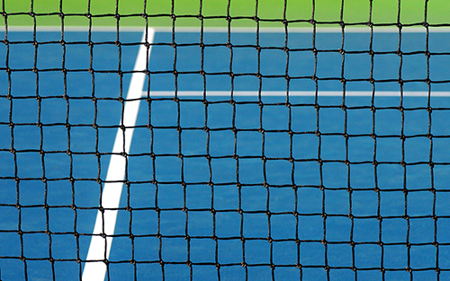
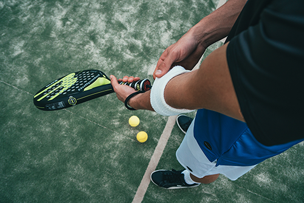

Clases
El conjunto de monitores más cualificados se encargará de darte la formación en cuanto a técnica requerida en este deporte. Las clases prácticas te permitián interiorizar los movimientos adecuados como si fuesen naturales.
Las clases colectivas convierten las clases en un espacio dinámico en el que jugar se convierte en una actividad placentera y divertida.
Entrenamientos personalizados
Si te sientes un campeón, de verdad lo eres o simplemente quieres avanzar rápidamente en la técnica que rodea a este deporte te podemos configurar sesiones de entranamiento a tu medida con un entrenador personal que se encargará de:
- Enseñarte la técnica adecuada para mejorar tus golpes
- Enseñarte a combinar la potencia con la técnica
- Mostrarte como mejorar el rendimiento en equipo
- Explicarte como utilizar la presión de los campeonatos en tu beneficio
Campeonatos
El club organiza campeonatos periódicos en los que te puedes divertir al mismo tiempo que mejoras en el deporte.
Tenemos campeonatos de un día, de fin de semana y ligas regulares. Puedes participar en los torneos masculinos, femeninos y mixtos
